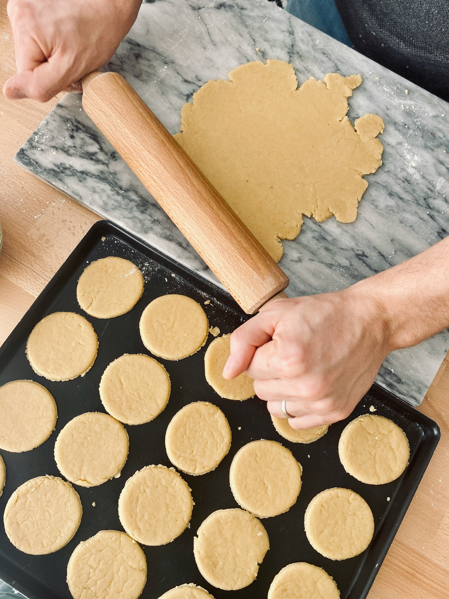

Shortbread Cookies

Description
Make 24 delicious shortbread cookies with just 4 ingredients in about 25min. Perfect for sharing with your family or decorating in the holidays!
Ingredients
- 2 cups butter, softened
- 1 cup of white sugar
- 2 teaspoons of vanilla extract
- 4 cups of all purpose flour
Steps
- Preheat over to 180 degrees C.
- Beat softened butter and sugar together in a large bowl until its light and fluffy. Using an electic mixer on medium speed should take around 3 to 4 minutes.
- Stir in vanilla; add flour gradually, mixing until a smooth dough forms.
- Fill cookie press with dough and form cookies onto two ungreased cookie sheets, spacing them about 1 ½ inches apart. Bake in the preheated oven until the edges of the cookies are just starting to turn golden brown, about 10 to 12 minutes.
- Remove the cookie sheets from the oven, and set them on a wire cooling rack for a few minutes. Then transfer the shortbread cookies to the rack to cool completely.
- Enjoy!
Home